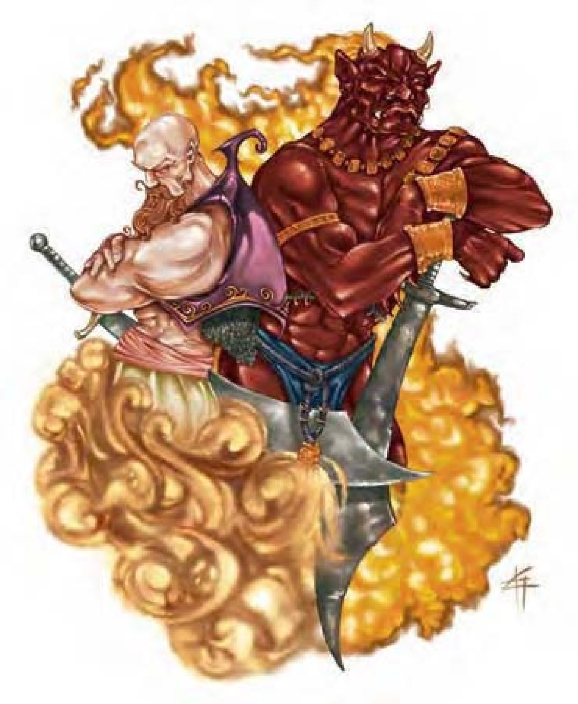

巨灵的外型近似人类，但栖息于元素界。他们力量强大、狡猾多端而且擅长施展幻术魔法。
巨灵将物质界视为中立区域，有时会来此与其他同类聚会（或作战），有时也会特地来搜集某些在原生界域不容易取得的物品。
战斗巨灵喜欢花脑力而非暴力击败敌人。如果情况不利，他们也会舍弃尊严先逃跑保命，以待日后再战。若受困无法脱逃，他们会尝试跟敌人谈交易，献出宝藏或人情来交换性命自由。
"异界传送"（类法术能力）：巨灵可以进入各元素界、星界或物质界。使用此能力时，除了本身之外，最多还可以另外携带八个生物，只要他们彼此和巨灵手牵手排成一串。除此之外，效果与同名法术相同（施法者等级13）。

| 资料栏位 | 风巨灵 (Djinni) 大型异界生物（风系、外界） |
| 生命骰 | 7d8+14（45HP） |
| 先攻 | +8 |
| 速度 | 20英尺（4格）、飞行60英尺（灵活） |
| 防御等级 | 16（-1体型、+4敏捷、+3天生）、接触13、措手不及12 |
| 基本攻击/擒抱 | +7 / +15 |
| 攻击 | 挥击+10近战（1d8+4） |
| 全力攻击 | 2挥击+10近战（1d8+4） |
| 占据/触及 | 10英尺 / 10英尺 |
| 特殊攻击 | 御风、类法术能力、旋风 |
| 特殊能力 | 黑暗视觉60英尺、对强酸免疫、"异界传送"、心灵感应100英尺 |
| 豁免 | 强韧+7、反射+9、意志+7 |
| 属性 | 力量18、敏捷19、体质14、智力14、感知15、魅力15 |
| 技能 | 估价+12、专注+12、手艺（任一）+12、交涉+4、脱逃+14、知识（任一）+12、聆听+12、潜行+14、察言观色+12、法术辨识+12、侦察+12、绳技+4（捆缚+6） |
| 专长 | 战斗施法、战斗反射、闪避、精通先攻B |
| 环境 | 风元素界 |
| 组织 | 单独、一伙（2-4）或一团（6-15） |
| 挑战级数 | 5（贵族8） |
| 宝藏 | 标准 |
| 阵营 | 通常混乱善良 |
| 进化 | 8-10HD（大型）；11-21HD（超大型） |
| 等级修正值 | +6 |
风巨灵的外型看来像是身材魁武皮肤黝黑的人类，但身高几乎有两倍高。
风巨灵是原生于风元素界的巨灵，他们的住所通常座落于漂浮在高空的土地或石块，离地3000英尺或甚至数英里，上面挤满了各式各样的建筑、庭院、花园、喷泉和雕塑。每个岛屿都由一位风巨灵头目所统治。
在风巨灵的社会组织中，最高的统治者是国王，其下有诸般贵族和官员（大臣、土司、藩王、头目、祭司和酋长等）。国王能够管辖两天路程内的所有风巨灵领地，并有六位大臣辅佐政事，以维持各藩属间的势力均衡。
如果某个领地遭到大举入侵，会派出一名使者（通常是最年轻的风巨灵）到附近领地求援，收到紧急讯息之后，该领地不仅会派兵相助，还会再派出两名使者警告其他领地，直到整个国家都全体动员为止。
风巨灵身高约10.5英尺，重达1000磅。
风巨灵通晓风族语、天界语、通用语和火族语。
战斗风巨灵不喜欢物理战斗，偏好以魔法或各种飞行能力攻击敌人。战况不利时，风巨灵会飞起并变身为旋风，让敌人无法追赶。
御风（特异）：任何空中的对手在攻击风巨灵时，攻击检定和伤害掷骰均承受-1减值。
类法术能力：随意施展――"隐形"（只对自身有效）；每天1次――"造粮术"、"造酒术"（与"造水术"相同，但造出的是酒）、"高等造物术"（若造物材质为植物纤维，则效果永久持续）、"常驻幻影"（DC=17）、"御风而行"。每天1次，风巨灵可以施展"气化形体"，持续时间最多1小时，施法者等级20，豁免检定DC的调整值与魅力调整值相同。
旋风（超自然）：每10分钟，风巨灵可以化身为旋风，在空中或任何表面移动，速度同飞行速度，持续时间7轮。
旋风底部直径5英尺，顶部直径可达30英尺，风巨灵可以随意控制旋风高度，但最高不超过50英尺，最低10英尺。
以旋风形态移动时，风巨灵不会引发借机攻击，就算进入另一个生物占用的空间也不会。如果生物接触旋风、进入旋风所在的空间或处于旋风的移动路径上，就可能被卷入。
若生物体型比风巨灵小一级或更小，被旋风卷入时必须通过反射检定（DC=20），否则会受到3d6点伤害，然后还要再进行一次"反射"检定（DC=20），未通过会被卷上空中定住，每轮自动受到1d8点伤害。具有飞行能力的生物每轮都可以进行"反射"检定（DC=20），成功则可以逃脱，但该轮仍然会受伤。豁免检定DC的调整值与力量调整值相同，并包含+3种族加值。
被卷入的生物无法自行移动，只能跟着风巨灵移动或试着挣脱。除此之外，还是可以正常行动，但必须通过"专注"检定（DC=15+法术等级）才能施法。这些生物的敏捷值会受到-4减值，攻击检定受到-2减值。只要旋风的体积足以容纳，风巨灵可以卷入任何数量的生物。
风巨灵随时都可以将卷入的生物喷出来，使其停留于旋风目前所在的方格。
如果旋风底部与地面接触，会以风巨灵为中心卷起一阵飞沙走石遮蔽视线，直径为旋风高度的一半，即使具有黑暗视觉也无法看穿。5英尺内的生物具有隐蔽效果，5英尺外则视同完全隐蔽。身陷其中的生物必须通过"专注"检定（DC=15+法术等级）才能施法。
化身为旋风形态时，风巨灵不能进行近战攻击，也不能对外围区域构成威胁。
极少数风巨灵可以成为贵族（约占总人口的1%）。若被人俘虏，风巨灵贵族可以让主人（非巨灵的其他生物）实现三个愿望，除此之外则不会执行其他命令，而且，一旦三个愿望都实现，风巨灵贵族就可以重获自由。风巨灵贵族的强度约略等同于火巨灵（详如下述），生命骰10。
| 资料栏位 | 火巨灵 (Efreeti) 大型异界生物（外界、火系） |
| 生命骰 | 10d8+20（65HP） |
| 先攻 | +7 |
| 速度 | 20英尺（4格）、飞行40英尺（灵活） |
| 防御等级 | 18（-1体型、+3敏捷、+6天生）、接触12、措手不及15 |
| 基本攻击/擒抱 | +10 / +20 |
| 攻击 | 挥击+15近战（1d8+6附加1d6火焰） |
| 全力攻击 | 2挥击+15近战（1d8+6附加1d6火焰） |
| 占据/触及 | 10英尺 / 10英尺 |
| 特殊攻击 | "改变体型"、烧烫、类法术能力 |
| 特殊能力 | 移形、黑暗视觉60英尺、对火焰免疫、"异界传送"、心灵感应100英尺、易受寒冷伤害 |
| 豁免 | 强韧+9、反射+10、意志+9 |
| 属性 | 力量23、敏捷17、体质14、智力12、感知15、魅力15 |
| 技能 | 哄骗+15、手艺（任一）+14、专注+15、交涉+6、易容+2（冒充+4）、威吓+17、聆听+15、潜行+16、察言观色+15、法术辨识+14、侦察+15 |
| 专长 | 战斗施法、战斗反射、闪避、精通先攻B、法术型能力瞬发（"焦灼射线"） |
| 环境 | 火元素界 |
| 组织 | 单独、一伙（2-4）或一团（6-15） |
| 挑战级数 | 8 |
| 宝藏 | 标准钱币、双倍宝物、标准物品 |
| 阵营 | 通常守序邪恶 |
| 进化 | 11-15HD（大型）；16-30HD（超大型） |
| 等级修正值 | ― |
火巨灵的外观像是强壮的巨人，砖红色的皮肤，灼热的双眼、头上有一对小角，獠牙外露。
火巨灵是原生于火元素界的巨灵，据说躯体由玄武岩、赤铜以及凝结的火焰所构成。
火巨灵性情非常残酷，不喜欢听从任何命令，而且有仇必报，加上喜欢玩弄别人的狡猾个性，可说是声名狼藉。传说中，大半火巨灵都居住在黄铜城，除此之外，火元素界四处都散布着火巨灵要塞，作为监控或骚扰界域内其他生物的军事据点。火巨灵和风巨灵是死对头，一旦相遇就会不由分说开打。
整个火巨灵族群都听命于一位驻跸于黄铜城的至尊苏丹，下辖许多土司、藩王和酋长等负责治理火元素界，另外还有六位总督专职负责物质界相关事宜。黄铜城是一座巨大的都城，大多数火巨灵都定居于此。它漂浮在火元素界最炽热的地区，外围环绕白灼的熔岩流构成无数海洋和湖泊。城市的基础是一个赤铜建构的发亮半球体，直径约40英里。至尊苏丹的宫殿就座落于直冲天际的塔顶尖端，传说中藏有无数金银财宝。黄铜城的人口难以胜数，远远超过物质界任何一座大都会。
火巨灵身高约12英尺，重达2000磅。
火巨灵通晓风族语、通用语、火族语和炼狱语。
战斗火巨灵最喜欢恶整敌人，把他们搞得昏头转向，一方面设法取得战略优势，另一方面以此为乐。
"改变体型"（类法术能力）：火巨灵具有改变生物体型的魔法能力，每天可以使用2次，效果与"变巨术"或"缩小术"相同（使用能力前火巨灵必须先指定变巨或缩小），但也可以用于火巨灵自己。若目标通过强韧检定（DC=13）则无效，豁免检定DC的调整值与魅力调整值相同。此能力视同二级法术。
烧烫（特异）：火巨灵的躯体会发出高热，每次近战攻击命中都可以额外造成1d6点火焰伤害。陷入擒抱时，只要能定住敌人，每轮也会自动造成相同伤害值。
类法术能力：随意施展――"侦测魔法"、"燃火术"、"烟火术"（DC=14）、"焦灼射线"（只有一条射线）；每天3次――"隐形"、"火墙术"（DC=16）；每天1次――实现三个"愿望术"（非巨灵的其他生物）、"气化形体"、"永恒幻影"（DC=18）。施法者等级12。豁免检定DC的调整值与魅力调整值相同。
移形（超自然）：火巨灵可化为任何小型、中型或大型人形生物或巨人形态。
| 资料栏位 | 小巨灵 (Janni) 中型异界生物（原生） |
| 生命骰 | 6d8+6（33HP） |
| 先攻 | +6 |
| 速度 | 穿着炼甲时20英尺（4格）、飞行15英尺（灵活）；基本速度30英尺、飞行20英尺（灵活） |
| 防御等级 | 18（+2敏捷、+1天生、+5炼甲）、接触12、措手不及16 |
| 基本攻击/擒抱 | +6 / +9 |
| 攻击 | 弯刀+9近战（1d6+4/18-20）；或长弓+8远程（1d8/x3） |
| 全力攻击 | 弯刀+9/+4近战（1d6+4/18-20）；或长弓+8/+3远程（1d8/x3） |
| 占据/触及 | 5英尺 / 5英尺 |
| 特殊攻击 | "改变体型"、类法术能力 |
| 特殊能力 | 黑暗视觉60英尺、适应元素界、"异界传送"、火焰抗力10、心灵感应100英尺 |
| 豁免 | 强韧+6、反射+7、意志+7 |
| 属性 | 力量16、敏捷15、体质12、智力14、感知15、魅力13 |
| 技能 | 估价+11、专注+10、手艺（任二）+11、交涉+3、脱逃+6、聆听+11、潜行+6、骑术+11、察言观色+11、侦察+11、绳技+2（捆缚+4） |
| 专长 | 战斗反射、闪避、精通先攻B、灵活移动 |
| 环境 | 热暖带沙漠 |
| 组织 | 单独、一伙（2-4）或一团（6-15） |
| 挑战级数 | 4 |
| 宝藏 | 标准 |
| 阵营 | 通常绝对中立 |
| 进化 | 7-9HD（大型）；10-18HD（大型） |
| 等级修正值 | +5 |
小巨灵看来跟人类差不多，身材高大，姿态挺拔，而且还透着一股说不出的威严。
小巨灵是巨灵族中最弱的一支，由四种元素共同构成，所以大半时间必须待在物质界。为了自身安全和隐私，小巨灵通常出没于荒凉的沙漠或隐密的绿洲。
小巨灵的社会组织非常开放，男女平等，每个部族由头目及其亲信的一两位大臣所领导，势力最强大的头目会获得藩王的尊号，危急时具有召集并号令小巨灵军队（有时包括人类盟友）的权柄。
许多小巨灵也会组成游牧团体，驱策一群驯养的骆驼、山羊或绵羊在各个绿洲间巡梭，逐水草而居。因此，某些小巨灵部族的领地可以广达数百英里。若非受到攻击，这些以游牧为生的小巨灵常常会被误认为人类。
小巨灵通晓通用语和一种沙漠专用语言（水族语、风族语、火族语或土族语）以及一种阵营专用语言（深渊语、天界语或炼狱语）。
战斗小巨灵身体非常状硕而且勇气十足，受到侮辱或伤害时决不会畏首畏尾。如果遇上正面冲突无法应付的对手，他们会善用飞行和隐形的能力，设法转到有利的位置重新整编。
"改变体型"（类法术能力）：小巨灵具有改变生物体型的魔法能力，每天可以使用2次，效果与"变巨术"或"缩小术"相同（使用能力前小巨灵必须先指定变巨或缩小），但也可以用于小巨灵自己。若目标通过强韧检定（DC=13）则无效，豁免检定DC的调整值与魅力调整值相同。此能力视同二级法术。
类法术能力：每天3次――"隐形"（只对自身有效）、"与动物交谈"，施法者等级12。每天1次――"造粮术"（施法者等级7）、"幻化灵体"（施法者等级12），持续时间1小时。豁免检定DC的调整值与魅力调整值相同。
适应元素界（特异）：小巨灵可以在风、土、火或水元素界存活48小时，如果滞留超过这段时间，每多停留1小时会受到1点伤害，直到返回物质界或死亡为止。
小巨灵人物具有下列种族特性：
―+6力量、+4敏捷、+2体质、+4智力、+4感知、+2魅力。
―中型。
―小巨灵的基本行走速度为30英尺，飞行速度20英尺（灵活）。
―黑暗视觉可达60英尺。
―种族生命骰：小巨灵起始为6级异界生物，生命骰6d8、基本攻击加值+6，强韧、反射与意志的基本豁免检定分别是+5、+5及+5。
―种族技能：小巨灵的异界生物等级使他的技能点数成为9x（8+智力调整值）。他的本职技能为估价、专注、手艺（任何）、脱逃、聆听、潜行、骑术、察言观色和侦察。
―种族专长：小巨灵的异界生物等级具有三个专长，另外还具有额外专长"精通先攻"。
―+1天生防御加值。
―特殊攻击（见前文）："改变体型"、类法术能力。
―特殊能力（见前文）：适应元素界、"异界传送"、火焰抗力10、心灵感应100英尺。
―母语：通用语。额外语言：深渊语、水族语、风族语、天界语、火族语、炼狱语、土族语。
―适合职业：游荡者。
―等级修正值：+5。